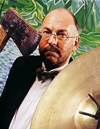

|
|
| Home |
| The company |
| Newsletter |
| What the press say |
| What you say |
What You SayA selection of audience comments about some Mike Maran productions.'We saw your performance at the MAC Birmingham, it was brilliantly performed and so entertaining. It's given a new meaning to Mahler's music. Well done.' Linda Woodhouse, UK, October 2004 'A thoroughly enjoyable evening and an excellent performance.' Jess Stirling, Linlithgow, UK, August 2004 'I saw The Little World of Don Camillo on Saturday at Keyworth. I was prompted to attend by the fact thatI too enjoyed reading the stories at my grandmother's house as a child. I thoroughly enjoyed the evening and could have listened to much more.' Kathryn Hewitt, Nottingham, UK, September 2005 'Went to Captain Corelli's Mandolin in Carrbridge Village Hall - excellent show - much better than the film! Mike should have had a say in the film version!' Ann Irvine, Inverness, UK, September 2005 'Don Camillo - saw it last Friday at The Byre. Absolutely fabulous. What a wonderful raconteur you are Mike Maran. A great evening. Will look forward to the next one....' Heather Banner, St. Andrews, UK, June 2005 'Having been to Cephalonia before knowing about Captain Corelli's Mandolin, we instantly fell for the island & its people who make you seem part of the family. Making return trips somewhat emotional - something thats never happened about a place we have visited before. But that emotion was felt once again at the palace theatre watching your show it made us laugh and it made us cry - it bought back memories, fantastic keep it up.' Brian & Sue Bull, Redditch, UK, March 2002 'What a way to tell a story, just beautiful in every respect. My life has obviously been the poorer for not having seen your other earlier productions.' Donald McGilchrist, St.Andrews, Scotland April 2002 'The whole audience was absolutely spellbound - you could have heard a pin drop for over an hour. Enjoyed it so much I had to go again - and it was even better the second time!' Leo Sapiets, Reading, UK, October 2002 |
|  |